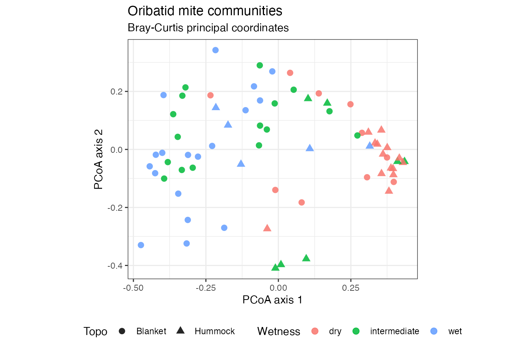
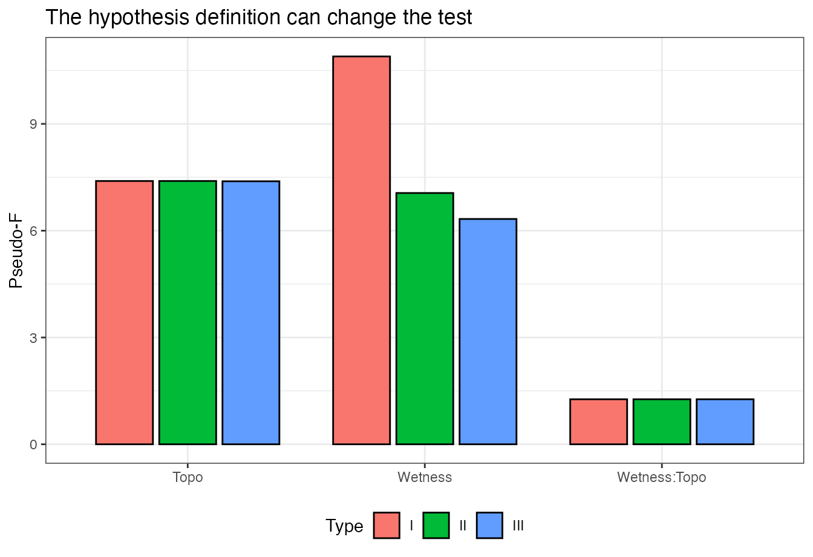

2. Fixed effects and Contrasts (Type I-II-III)
Source:vignettes/2-fixed-effects.Rmd
2-fixed-effects.RmdFixed effects describe systematic differences in community composition (e.g. habitat, treatment, season, environmental gradients, and their interactions)
Type I, II, and III specify different questions when predictor subspaces overlap. In a perfectly orthogonal design they coincide; with unequal cells, correlation, or interactions they need not.
Choosing the type
- Type I: order represents a planned sequence of adjustment.
- Type II: main effects are interpreted marginally while respecting their containing interactions.
- Type III: each term is tested conditional on every other estimable term.
Note: This approach differs from the most mixed-models: Base
lme4 reports fixed-effect coefficients with Wald t-values
via summary() (i.e. not an ANOVA table) — while
lme4::anova() on an lmer model returns sequential (Type I)
F-tests. lmerTest returns Type III ANOVA tables by default
(with Satterthwaite degrees of freedom), and car::Anova()
takes an explicit type = "II" or type = "III".
permanova() makes the choice explicit rather than
defaulting, because on unbalanced designs the three types give genuinely
different answers and no default is universally correct.
Example: Mite communities along environmental gradients
The vegan::mite data contain 35 oribatid mite taxa from
70 samples. For a compact factorial example the recorded topographic
class is combined with tertiles of water content. Water content is
categorised into three groups: dry,
intermediate, and wet.
data(mite, mite.env, package = "vegan")
mite_bray <- vegdist(mite, method = "bray")
breaks <- quantile(mite.env$WatrCont, c(0, 1/3, 2/3, 1))
env <- transform(
mite.env,
Wetness = cut(
WatrCont, breaks = breaks, include.lowest = TRUE,
labels = c("dry", "intermediate", "wet")
),
Topo = droplevels(factor(Topo))
)
with(env, table(Wetness, Topo)) |> tab()| Blanket | Hummock | |
|---|---|---|
| dry | 10 | 14 |
| intermediate | 16 | 7 |
| wet | 18 | 5 |
All six combinations occur, but their sample sizes differ. The ordination suggests that both predictors may contribute to composition:
ord <- as.data.frame(cmdscale(mite_bray, k = 2))
names(ord) <- c("Axis1", "Axis2")
ord$Wetness <- env$Wetness
ord$Topo <- env$Topo
ggplot(ord, aes(Axis1, Axis2, colour = Wetness, shape = Topo)) +
geom_point(size = 2.6, alpha = 0.85) +
labs(
title = "Oribatid mite communities",
subtitle = "Bray-Curtis principal coordinates",
x = "PCoA axis 1", y = "PCoA axis 2"
) +
theme_bw() +
coord_fixed() +
theme(legend.position = "bottom")
Type selection
Type I: a sequential question asks what each term adds at the point where it enters the formula. The question is explicitly ordered. This is used when order expresses the scientific model: for example, adjust for a pre-treatment gradient before asking what treatment adds. Unsurprisingly, don’t choose an order because it produces the smaller p-value.
Type II: population effects respecting marginality tests each main effect after adjusting for the other main effects, but not for interactions containing that effect. In an additive model it gives the question “what does this predictor add after the other predictors?” and is invariant to formula order. Type II is often a sensible default for ecological main effects when unequal cell counts are incidental and the interaction is not the main target.
Type III: each term conditional on every other term
tests each effect after accounting for every other term in the model,
including interactions involving that effect. A main effect is then a
contrast at the reference implied by the factor coding. With
interactions this requires sum-to-zero contrasts;
permanova() applies them to a copy of the data so the
original data frame is not modified.
wetness_first <- permanova(mite_bray ~ Wetness * Topo, env,
type = "I",
permutations = 999,
seed = 101)
wetness_first$table[1:3, c("Source", "df", "Pseudo-F", "P(perm)")] |> tab()| Source | df | Pseudo-F | P(perm) |
|---|---|---|---|
| Wetness | 2 | 10.895 | 0.001 |
| Topo | 1 | 7.396 | 0.001 |
| Wetness:Topo | 2 | 1.265 | 0.194 |
Or with topography first:
topography_first <- permanova(mite_bray ~ Topo * Wetness, env,
type = "I",
permutations = 999,
seed = 101)
topography_first$table[1:3, c("Source", "df", "Pseudo-F", "P(perm)")] |> tab()| Source | df | Pseudo-F | P(perm) |
|---|---|---|---|
| Topo | 1 | 15.069 | 0.001 |
| Wetness | 2 | 7.059 | 0.001 |
| Topo:Wetness | 2 | 1.265 | 0.194 |
Comparing Types:
The three definitions can be compared directly:
fits <- list(I = wetness_first, II = fit_II, III = fit_III)
comparison <- do.call(rbind, lapply(names(fits), function(type) {
tab <- fits[[type]]$table
keep <- is.finite(tab$`Pseudo-F`)
data.frame(
Type = type, Term = tab$Source[keep],
PseudoF = tab$`Pseudo-F`[keep], P = tab$`P(perm)`[keep]
)
}))
ggplot(comparison, aes(Term, PseudoF, fill = Type)) +
geom_col(position = position_dodge(width = 0.8), color="black", width = 0.72) +
labs(
title = "The hypothesis definition can change the test",
x = NULL, y = "Pseudo-F"
) +
theme_bw() +
theme(legend.position = "bottom")
Keep continuous predictors continuous
Ordinary numeric covariates can be combined with factors. Here water content and substrate density remain on their measured scales:
gradient_fit <- permanova(mite_bray ~ Topo + WatrCont + SubsDens,
data = env,
type = "II",
permutations = 999,
seed = 101)
gradient_fit$table[1:3, c("Source", "df", "Pseudo-F", "P(perm)")] |> tab()| Source | df | Pseudo-F | P(perm) |
|---|---|---|---|
| Topo | 1 | 7.449 | 0.001 |
| WatrCont | 1 | 15.632 | 0.001 |
| SubsDens | 1 | 5.999 | 0.001 |
Note: Standardising a predictor changes its coefficient scale but not the subspace tested by a one-degree-of-freedom term. Transformations that change ordering or linearity can change the ecological hypothesis and should be justified.